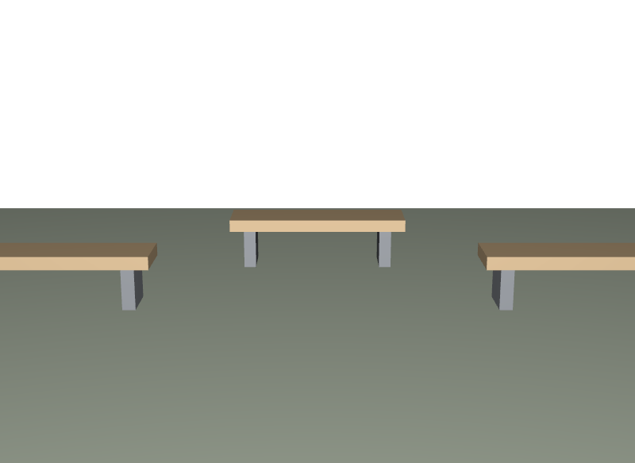

シーン側でベンチの形を直す
直すべきはAssetです。シーンで直すと、他のシーンには反映されません。
STEP 122 · 総合演習2
作ったベンチを並べて、公園にします
今日これだけ
この演習について
STEP 121で作ったベンチを使って、シーンを組み立てます。Sceneの側が持つのは、どのAssetをどこに置くかと、そのシーンにしか無いもの（地面やカメラ）だけです。ベンチの形も色も、Sceneには一行も書きません。
USDA
#usda 1.0
(
defaultPrim = "Park"
metersPerUnit = 1
upAxis = "Y"
)
def Xform "Park" (
kind = "assembly"
)
{
def Scope "Benches"
{
def "Bench_1" (
references = @bench.usda@
instanceable = true
)
{
double3 xformOp:translate = (-2.4, 0, 0)
uniform token[] xformOpOrder = ["xformOp:translate"]
}
... Bench_2、Bench_3 も同じ形 ...
}
def Mesh "Ground"
{
uniform token subdivisionScheme = "none"
int[] faceVertexCounts = [4]
int[] faceVertexIndices = [0, 1, 2, 3]
point3f[] points = [(-5, 0, 4), (5, 0, 4), (5, 0, -4), (-5, 0, -4)]
color3f[] primvars:displayColor = [(0.55, 0.62, 0.5)]
}
def Camera "ShotCam" { ... }
}この短いファイルに、これまでのSTEPがひととおり入っています。STEP 18 Scopeで整理し、STEP 57 Referenceで参照し、STEP 108 instanceableで共有し、STEP 84 assemblyで役割を宣言し、STEP 21 translateで置いています。
結果

examples/lesson-71/park.usda / Apple USD Tools 0.25.2 のusdrecord（Hydra Storm・Metal）/ macOS 26.5.2・Apple M4from pxr import Usd, UsdGeom
stage = Usd.Stage.Open("park.usda")
print(len(list(stage.Traverse()))) # 7
print([str(p.GetPath()) for p in stage.GetPrototypes()]) # ['/__Prototype_1']
light = Usd.Stage.Open("park.usda", Usd.Stage.LoadNone)
print(len(list(light.Traverse()))) # 4ベンチ3台の中身は1つのPrototypeにまとまり、Stage上のPrimは7個です。Payloadを開かなければ4個まで落ちます。STEP 108 Scenegraph InstancingとSTEP 99 Reference/Payload Patternが、両方効いている状態です。
つまずいた記録
この演習を作る途中で、実際に次の状態になりました。シーンは正しく組めているのに、描画すると何も写りません。
# シーンは壊れていない
print(len(list(stage.Traverse()))) # 7
print(bench.IsInstance()) # True
print([c.GetName() for c in bench.GetPrototype().GetChildren()])
# ['Seat', 'Leg_1', 'Leg_2', 'ShotCam'] ← ここ
cache = UsdGeom.BBoxCache(Usd.TimeCode.Default(), [UsdGeom.Tokens.default_])
print(cache.ComputeWorldBound(stage.GetPrimAtPath("/Park")).ComputeAlignedRange())
# [(-5, 0, -4)...(5, 0.51, 4)] ← 形もある原因はCameraの名前の重複でした。ベンチのAssetにもShotCamという名前のCameraが入っていたため、シーンには同名のCameraが4つ（公園の1つ＋ベンチ3台ぶん）存在していました。usdrecordのヘルプにはこう書かれています。
Note that if only the prim name is used and more than one camera
exists with that name, which one is used will effectively be random直し方は2つあり、両方を採りました。Asset側のCameraをAssetCamへ改名し、シーン側は名前ではなくPathで指定するようにしました。
$ usdrecord --camera /Park/ShotCam --imageWidth 800 -c high \
park.usda park.pngSTEP 92 Hydraで書いたとおり、描画結果を見ても原因は分かりません。Stage側を調べて「シーンは正しい」と確かめたことで、残る容疑者が描画の指定だけになったという筋道です。
Diagram
Python
from pxr import Gf, Kind, Usd, UsdGeom
stage = Usd.Stage.CreateNew("park.usda")
UsdGeom.SetStageMetersPerUnit(stage, 1)
UsdGeom.SetStageUpAxis(stage, UsdGeom.Tokens.y)
park = UsdGeom.Xform.Define(stage, "/Park")
stage.SetDefaultPrim(park.GetPrim())
Usd.ModelAPI(park.GetPrim()).SetKind(Kind.Tokens.assembly)
UsdGeom.Scope.Define(stage, "/Park/Benches")
for i, pos in enumerate(((-2.4, 0, 0), (0, 0, -1.4), (2.4, 0, 0))):
prim = stage.DefinePrim("/Park/Benches/Bench_%d" % (i + 1))
prim.GetReferences().AddReference("bench.usda")
prim.SetInstanceable(True)
UsdGeom.Xformable(prim).AddTranslateOp().Set(Gf.Vec3d(*pos))
stage.Save()ループ1つでシーンが組めます。ベンチの中身に関わるコードは一行もありません。
USDA → Python mapping
USDA
kind = "assembly"↓Python
Usd.ModelAPI(prim).SetKind(Kind.Tokens.assembly)USDA
references = @bench.usda@↓Python
prim.GetReferences().AddReference("bench.usda")USDA
instanceable = true↓Python
prim.SetInstanceable(True)Beginner notes
よくある間違い
直すべきはAssetです。シーンで直すと、他のシーンには反映されません。
地面やカメラはシーンのものです。Assetに入れると、置くたびに付いてきます。
同名が複数あると、名前での指定が定まりません。Pathで指定するか、名前を分けます。
数が増えたときに重くなります。中身が同じなら共有します。
Glossary
Official references
確認日: